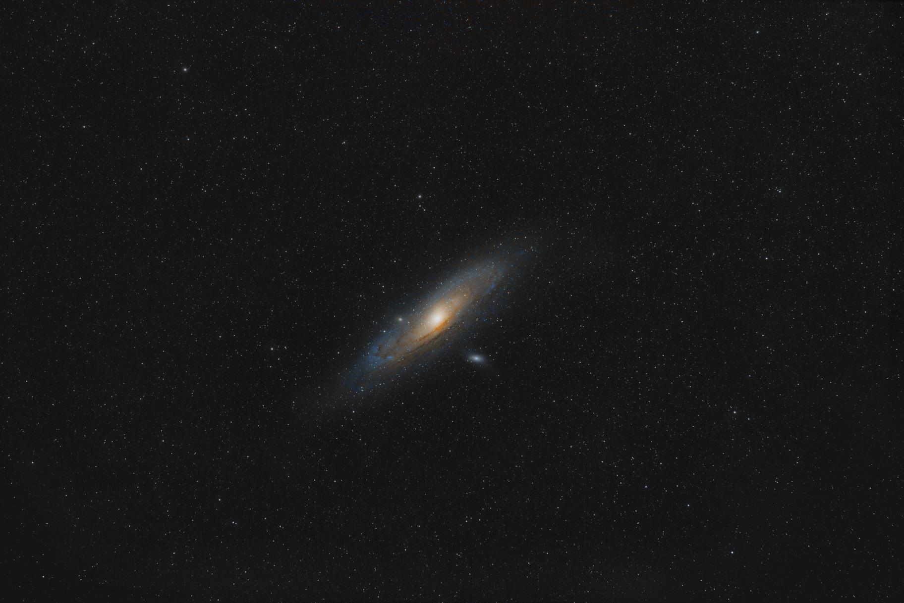

CV
Vous pouvez télécharger mon CV en PDF ici : Télécharger le CV
Formation
- 2024–2025 : Licence 2 de Physique – Université de Bordeaux (2ème de ma promo, notamment major d'algèbre)
- 2022–2024 : Licence 1 et 2 de Physique-Chimie – Université d'Angers
- 2022 : Baccalauréat général avec spécialités Mathématiques et Physique-Chimie, Lycée François Magendie
- 2019 : Brevet des collèges marocain, collège Alexandre (ISO), Casablanca
Compétences
- Langages : Python, C, LaTeX
- Physique : électromagnétisme, physique quantique, optique, thermodynamique, mécanique, etc.
- Simulation numérique, analyse de données
Physique
- Projet sur les paramètres de Stokes
- Méthode de Newton-Raphson complexe
- Projet sur les ordinateurs quantiques et applications
Ressources (pas à jour)
Astrophotographie
Nébuleuse d'Orion (M42), nébuleuse de la Flamme (NGC 2024) et nébuleuse de la Tête de Cheval (IC 434), capturées depuis Saucats avec un objectif Samyang 135mm, seulement 2èmin d'intégration le 12 avril 2025.

Galaxie d'Andromède (Messier 31), photographié à l'aide d'un Samyang 135mm le 24 octobre 2024 (159*1min=2h39 d'intégration avec APN non défiltré), traité avec Siril.
À propos
Email : dawoudroger@gmail.com
Téléphone : 07 77 26 59 25